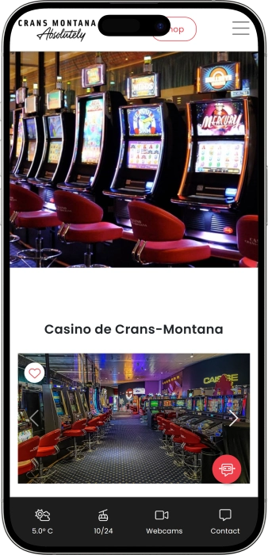

Exklusives Willkommensangebot von
Exklusives Willkommensangebot von
Casino Crans‑Montana – Spiel, Gastronomie & Nightlife im Herzen des Kurorts
Top-Casino
Bonusdetails
Casino
Boni
Rate
Freispiele
Mehr Infos
Erhalten
Vorteile
-
130+ Slots mit Mindesteinsatz ab CHF 0.01
-
Live‑Tische: Roulette, Blackjack, Ultimate Hold’em Poker
-
Elektronisches Roulette: 15 Stationen, Einsatz ab CHF 0.50
-
Faire Mindest‑Einsätze auf allen Spielen für Einsteiger
-
Gratis‑Parking für Gäste direkt vor Ort
-
Eintritt frei; Ausweis‑Kontrolle obligatorisch am Eingang
-
Restaurant und Bar mit à‑la‑carte Küche
- Die Spielbank in Crans‑Montana (Wallis) vereint ein breites Spielangebot mit komfortablen Services und guter Erreichbarkeit. Dank fairen Einsätzen und durchdachter Infrastruktur ist sie sowohl für Einsteiger als auch für erfahrene Spieler ideal.
Casino Crans‑Montana App


Über Casino Crans‑Montana
- Mystery Jackpot bis CHF 10’000
- Slots: Gewinne bis CHF 25’000
- Aktions‑Spieltickets CHF 10
Das Casino Crans‑Montana liegt zentral im alpinen Kurort im Wallis. Gäste finden eine breite Auswahl an Slots und klassischen Live‑Tischen. Elektronische Spiele ergänzen das Angebot und eignen sich auch für Einsteiger. Restaurant und Bar servieren à‑la‑carte Gerichte und Signature‑Drinks. Der Zutritt ist Erwachsenen mit gültigem Ausweis vorbehalten.
Ein strenger Dresscode besteht nicht, gepflegte Kleidung wird erwartet. Bequeme Anreise und verfügbare Parkplätze erleichtern den Besuch. Im Inneren gibt es rauchfreie Bereiche sowie einen separaten Raucherbereich. Die Atmosphäre verbindet alpines Flair mit aufmerksamen Service. Das Casino passt sowohl für erste Spielversuche als auch für erfahrene Spielerinnen und Spieler.
Casino Crans‑Montana: Stil, Atmosphäre und Vorteile im Alpenkurort
Mitten im Kurort Crans‑Montana vereint die Spielbank alpinen Chalet‑Charme mit modernem Interior und einem entspannten, gepflegten Ambiente. Gedämpftes Licht, bequeme Sitzbereiche und aufmerksamer, mehrsprachiger Service schaffen einen Ort für Apéro, Spiel und gesellige Abende. Das Ferien‑Feeling ist spürbar: von der dezenten Musik bis zum klaren Zonenkonzept, das den Aufenthalt angenehm und unkompliziert macht.
Die Öffnungszeiten sind auf tägliche Besuche und späte Abende ausgelegt. Der Slot‑Bereich ist bereits tagsüber geöffnet und bleibt bis in die Nacht offen, während die Live‑Tische am Abend starten und bis spät weiterlaufen. So lässt sich der Tag im Wallis mit Spiel und Unterhaltung abrunden, sei es nach dem Abendessen, einem Event oder einer Panorama‑Spaziergang.
Kulinarisch erwartet die Gäste ein stilvoller Lounge‑Bar‑Bereich und ein Bistro mit saisonalen Speisen und Signature‑Drinks. Die Karte setzt auf à‑la‑carte Klassiker und zeitgemässe Cocktails, während die Raumaufteilung den Komfort für alle Gäste wahrt, inklusive diskret organisierter Bereiche für unterschiedliche Vorlieben. Der Fokus liegt auf Qualität, unkomplizierter Gastfreundschaft und stimmigem Kurort‑Flair.
Rund um das Casino finden sich zahlreiche Übernachtungsmöglichkeiten. Von Boutique‑Häusern mit Wellness & Spa bis zu familienfreundlichen Hotels und Apartments ist die Auswahl gross, viele Optionen sind bequem zu Fuss erreichbar. Die Anreise ist dank guter regionaler Anbindung einfach, und für Gäste mit Auto stehen praktische Parkmöglichkeiten nahe dem Eingang zur Verfügung.
Das Unterhaltungsprogramm ergänzt das Spielangebot mit Themenabenden, Gastro‑Aktionen, leichter Live‑Musik und Game‑Intro‑Sessions für Einsteiger. Bonus‑ und Loyalitätsprogramme sind auf persönliche Vorteile ausgerichtet: Club‑Karten erleichtern den Zugang, sammeln Punkte und eröffnen exklusive Offerten an Bar und Küche, während saisonale Promotions zusätzliche Spieltickets, Verlosungen und Specials bringen. Gleichzeitig sorgt die Spielbank für einen verantwortungsvollen Rahmen mit klaren Teilnahme‑Regeln und freundlicher Ausweiskontrolle.
Casino Crans‑Montana verbindet Kurort‑Stil, sorgfältige Gastronomie und abwechslungsreiche Spiele zu einem stimmigen Gesamterlebnis. Hier findet man die richtige Mischung aus entspannter Ferienstimmung und spannender Unterhaltung, ideal für erste Spielversuche ebenso wie für erfahrene Gäste.
Casino Crans‑Montana: Sprachen, Zahlung und Finanz‑Services
Das Team im Casino Crans‑Montana kommuniziert mehrsprachig und erleichtert damit den Aufenthalt für Gäste aus dem In‑ und Ausland. Französisch und Englisch sind standardmässig verfügbar, bei Bedarf unterstützen Mitarbeitende auch auf Deutsch und Italienisch; Empfang, Spielbereich und Bar helfen bei Registrierung, Regel‑Erklärung und Orientierung im Haus. So bleibt der Besuch für die lokale Community und für Touristinnen und Touristen gleichermassen angenehm.
Die Zahlung ist unkompliziert organisiert. Hauptwährung ist der Schweizer Franken, im Casino und im Restaurant werden Bargeld sowie gängige Bankkarten akzeptiert. Kontaktlose Zahlungen sind dort möglich, wo die Infrastruktur dies unterstützt; Bestellungen an der Bar und der Kauf von Jetons an der Kasse laufen zügig. Auf Wunsch erklärt das Personal den Ablauf für Spiel‑ und Servicezahlungen Schritt für Schritt.
Für Bargeld stehen mehrere Optionen bereit. Gäste nutzen Geldautomaten im Gebäude oder in unmittelbarer Nähe, zusätzlich unterstützt die Kasse mit Auszahlungen und den gemäss Hausregel erlaubten Operationen. Falls ein Währungswechsel nötig ist, gibt es einen begrenzten Service zur Umrechnung in Schweizer Franken; für höhere Beträge oder seltene Währungen empfiehlt sich der Gang zu Banken und offiziellen Wechselstuben im Kurort.
Ergänzend bietet das Casino Crans‑Montana Kunden‑ und Loyalitätsprogramme, bei denen Status und Punkte Vorteile vor Ort ermöglichen. Club‑Karten vereinfachen den Zutritt, beschleunigen die Ausweiskontrolle und öffnen personalisierte Offerten in Bar und Küche, während Zahlungsabläufe reibungslos mit Ihren Besuchen verknüpft werden. Insgesamt ist die Infrastruktur darauf ausgelegt, Sprach‑ und Zahlungsfragen schnell und stressfrei zu lösen.
Besuchsregeln im Casino Crans‑Montana: Dresscode, Zutritt und Anreise
Das Casino Crans‑Montana bietet ein entspanntes, aber stilvolles Kurort‑Ambiente, in dem Komfort und Spiel‑Etikette zusammengehören. Der Zutritt ist Erwachsenen vorbehalten, eine Ausweis‑Kontrolle am Eingang sorgt für einen sicheren und ruhigen Aufenthalt. Der Dresscode ist grundsätzlich locker, dennoch wird gepflegte, dem öffentlichen Raum angemessene Kleidung erwartet. Foto‑ und Videoaufnahmen im Spielbereich sind in der Regel eingeschränkt; das Teilen von Inhalten ohne Zustimmung ist unerwünscht, um die Privatsphäre der Gäste zu schützen. Rauchen ist nur in klar gekennzeichneten Bereichen erlaubt, der Hauptsaal bleibt rauchfrei. Getränke und Snacks gibt es an Bar und Bistro, doch offensichtliche Trunkenheit oder Regelverstösse können zum Ausschluss vom Spiel führen. Der Sicherheitsdienst ist berechtigt, Taschen sowie Gepäckstücke visuell zu prüfen, um verbotene Gegenstände auszuschliessen. Planen Sie Ihren Besuch idealerweise im Voraus: Am Abend kann es zu erhöhtem Gästeaufkommen und Wartezeiten kommen. Parkplätze befinden sich in unmittelbarer Nähe zum Eingang; die Anreise ist auch mit ÖV, Taxi oder zu Fuss aus dem Ortszentrum bequem. Für Gäste mit eingeschränkter Mobilität sind Lösungen zur Barrierefreiheit vorgesehen, damit der Aufenthalt angenehm bleibt. Die Einhaltung der Hausregeln unterstützt die ruhige Atmosphäre und macht den Abend für alle angenehm.
Dresscode
- • Gepflegte, ordentliche Kleidung; smart‑casual ist passend
- • Bitte keine Strand‑, Sport‑ oder stark «häusliche» Outfits
- • Geschlossene Schuhe empfohlen; Kopfbedeckungen im Spielbereich sind unerwünscht
Zutrittsbedingungen
- • Eintritt nur für Erwachsene mit gültigem Ausweis (mit Foto)
- • Zugang zu Spielbereichen, Bar und Restaurant nach Kontrolle am Eingang
- • Das Personal kann bei Regelverstoss oder unangemessenem Verhalten den Zugang verweigern
Verbote
- • Foto‑/Video‑Aufnahmen im Spielbereich ohne Erlaubnis, Live‑Streaming von Partien
- • Rauchen ausserhalb ausgewiesener Raucherzonen
- • Mitgebrachter Alkohol, Glasflaschen und gefährliche Gegenstände
- • Aggressives Verhalten, Eingriffe in den Betrieb von Tischen und Geräten
Parkplätze und Anreise
- • Parkplätze direkt beim Casino; in Spitzenzeiten frühzeitig anreisen
- • Bequeme Anfahrt mit ÖV und Taxi aus dem Ortszentrum
- • Im Winter Zeitpuffer einplanen; Wetter und Strassenbedingungen können den Verkehr beeinflussen
- • Barrierefreie Lösungen für Gäste mit eingeschränkter Mobilität sind vorgesehen
Club Circus Crans‑Montana: Treueprogramm und Vorteile
Das Club Circus Treueprogramm in der Spielbank Crans‑Montana sorgt dafür, dass jeder Besuch zusätzliche Privilegien und spürbare Vorteile bringt. Nach der Registrierung erhalten Sie eine Club‑Karte, die den Ausweis‑Check am Eingang beschleunigt, Punkte fürs Spielen sammelt und Zugang zu persönlichen Offerten eröffnet. Punkte entstehen bei Einsätzen an Slots und elektronischen Tischen und lassen sich anschliessend am Terminal gegen Geschenke, Spieltickets und Vor-Ort‑Vorteile eintauschen. Ihr Status steigt mit der Punktzahl; höhere Stufen bringen priorisierten Service, erweiterte Boni und exklusive Einladungen. Den Punktestand und Status sehen Sie jederzeit am Club Circus Terminal im Saal, wo Sie Ihre Punkte direkt einlösen können. Über das Jahr verteilt gibt es saisonale Promotions und Themenwochen, inklusive Überraschungs‑Gutschriften und Punkt‑Booster. Für Gäste stehen Willkommens‑ und Geburtstags‑Aufmerksamkeiten sowie Gastro‑Pakete mit Spieltickets bereit, um Kurort‑Flair und Spielspass stimmig zu verbinden.
Registrierungsbedingungen
- • 18+ und gültiger Ausweis mit Foto (Pass/ID/Führerausweis)
- • Anmeldung an der Rezeption; Club‑Karte wird kostenlos ausgestellt
- • Zustimmung zu Club‑Regeln und Datenschutzbestimmungen
- • Club‑Karte vereinfacht den Zutritt: kein Ausweis bei jedem Durchgang nötig
Statusstufen und Erreichen
- • Basis: Startstatus nach Registrierung, Punktesammeln gemäss Basisskala
- • Erweitert: nach Erreichen eines Punkte‑Schwellwerts; priorisierte Offerten
- • Premium: erhöhte Punkteskala, Zugang zu geschlossenen Promotions und Einladungen
- • VIP: persönliche Privilegien, individuelle Betreuung und Top‑Offerten
- • Statusaufstieg durch kumulierte Einsätze; in Promo‑Phasen gelten Booster (doppelte/dreifache Punkte)
- • Fortschritt prüfen und Punkte einlösen direkt am Club Circus Terminal
Boni und Vorteile
- • Willkommens‑Glas Champagner für neue Club‑Mitglieder
- • Spiel‑Tickets im Wert von CHF 10 im Rahmen von Gastro‑Paketen und Aktionen
- • Geschenk‑Gutscheine über CHF 50 für Leistungen vor Ort und Partnerangebote
- • Überraschungs‑Punktegutschriften an Themen‑Tagen und Festzeiten
- • Rabatte und Komplimente an Bar/Bistro gemäss Club‑Offerten
- • Priorisierte Einladungen zu Events und Einsteiger‑Sessions an den Spieltischen
Softwareanbieter
Unterhaltung und Gaming im Casino Crans‑Montana
Casino Crans‑Montana: Boni, Gewinne und saisonale Specials
Das Casino Crans‑Montana ergänzt das Spielangebot laufend mit Promotions, damit jeder Besuch nicht nur spannend, sondern auch vorteilhaft wird. Im Mittelpunkt stehen Jackpots an Slots und thematische Verlosungen, die das Spielgefühl zusätzlich pushen. An Wochenenden und Feiertagen sorgen Kampagnen mit Sofort‑Bonussen und Finalen für Höhepunkte, wochentags runden Gastro‑Kombis den After‑Work‑Besuch ab. Für Wochenend‑Gäste gibt es abendliche Finals, kleine Show‑Formate und Entertainment‑Aktionen. Slot‑Fans profitieren von Mystery‑Jackpots, während Tischspiel‑Gäste über Spiel‑Tickets und Promo‑Sets einsteigen. Im Saisonkalender erscheinen Herbst‑/Winter‑ und Frühling‑/Sommer‑Themen mit Preisen und Goodies, passend zum Kurort‑Flair. Praktisch sind auch Geschenkgutscheine für sich selbst oder Freunde sowie Menü‑Bundles mit inkludiertem Spiel‑Ticket. So lässt sich der Besuch auf ein konkretes Event timen und Spiel, Dinner und Verlosungen sinnvoll kombinieren. Alle Angebote richten sich an erwachsene Gäste und finden im Rahmen des verantwortungsvollen Spiels statt. Verfügbarkeiten und Details hängen vom Besuchsdatum und der jeweiligen Haus‑Agenda ab.
Spiel‑Boni und Gewinne
- • Mystery Jackpot an Slots: maximaler Überraschungs‑Gewinn bis CHF 10’000 auf angeschlossenen Automaten.
- • Gewinne an ausgewählten Slots: potenzielle Auszahlungen bis CHF 25’000 je nach Spieleinstellung.
- • Spiel‑Tickets: Promo‑Tickets im Wert von CHF 10 für den Einstieg oder die Teilnahme an Themen‑Aktionen.
Entertainment und Gastro‑Angebote
- • Burger Pack + Game Ticket: Menü mit Burger und Fries plus Spiel‑Ticket über CHF 10 für CHF 19; mit Getränk für CHF 22.
- • Abendliche Mini‑Shows & Regel‑Intros: spielerisches Onboarding, Promo‑Jetons und Sofort‑Gewinne im Rahmen angekündigter Abende.
- • Geschenk‑Gutscheine: Vouchers über CHF 50 zur Nutzung im Haus – ideal als Geschenk oder für die eigene Abendplanung.
Saisonale Aktionen und Special Events
- • Weekend Super Tickets: Serien‑Draws mit Qualifikationen für wöchentliche/monatliche Finals und einen grossen Schluss‑Preis (z. B. Teilnahme an einer Auto‑Verlosung).
- • Festtags‑Kampagnen: Themenwochen mit erhöhten Sofort‑Gewinnen und saisonalen Bühnen‑Akzenten; oft inklusive zusätzlicher Spiel‑Tickets über CHF 10.
- • Gastro‑Saisons: Herbst/Winter‑ und Frühling/Sommer‑Menüs mit Promo‑Serves und «Spiel + Dinner»‑Bundles, bei denen ein Teil als Spiel‑Voucher rückvergütet wird.
Beliebte Spiele im Casino Crans‑Montana
Der Spielsaal des Casino Crans‑Montana im Wallis verbindet klassische Tische mit moderner Technologie, sodass für jedes Profil etwas dabei ist. Besonders gefragt sind Slots: schneller Spielfluss, vielfältige Themen und Zusatzfeatures bis hin zu Mystery‑Draws sorgen für Abwechslung. Wer Tradition liebt, wählt die englische Roulette mit Live‑Croupiers – ein atmosphärisches Spiel, in dem Einsatzdisziplin und Bankroll‑Management zählen. Für technikaffine Gäste eignet sich die elektronische Roulette: gleiches Prinzip, aber interaktiv, übersichtlich und mit zügigen Runden. Blackjack überzeugt durch die Balance aus Strategie und Glück; Basisstrategie und Timing sind hier entscheidend. Ultimate Texas Hold’em überträgt das Texas‑Feeling in ein klares Duell gegen den Dealer und bietet eine transparente Einsatzstruktur. In allen Bereichen gilt verantwortungsvolles Spiel: zugängliche Minimaleinsätze für Einsteiger, genügend Tiefe für Fortgeschrittene. Das Team unterstützt mit kurzen Regel‑Intros, damit auch der erste Besuch entspannt und sicher verläuft.
- • Slots (Spielautomaten) — Schneller Ablauf, starke Themen, Bonusfeatures und Mystery‑Elemente; ideal für kurze wie längere Sessions.
- • Englisches Roulette — Live — Live‑Croupier, klassische Zahl‑ und Sektorwetten; maximale Casino‑Atmosphäre und hohe Immersion.
- • Elektronisches Roulette (ETG) — Gleiches Regelwerk, digitales Interface; klare Übersicht, zügige Spins, komfortable Einsatzsteuerung.
- • Blackjack — Kartenklassiker mit solider Basisstrategie; Mischung aus Mathematik, Disziplin und gutem Spielrhythmus.
- • Ultimate Texas Hold’em Poker — Pokervariante gegen den Dealer: bekannte Kombinationen, klare Setzrunden, weniger Variablen – mehr Übersicht.
Minimale und maximale Einsätze – Casino Crans‑Montana
Damit Sie Ihren Besuch optimal planen können, finden Sie hier die Richtwerte zu den Einsatz‑Limiten in den Hauptbereichen des Casino Crans‑Montana. Die Mindesteinsätze erleichtern den Einstieg; die Maximaleinsätze folgen dem Limit‑Plan des jeweiligen Tisches bzw. Automaten und können je nach Tageszeit, Auslastung und Hausregel variieren. Alle Beträge in CHF; prüfen Sie die aktuell angezeigten Limits direkt am Tisch/Terminal.
Maximaleinsätze richten sich nach dem Limit‑Plan des Tisches/Terminals und können variieren. Massgeblich sind die Limit‑Tafel, der Terminal‑Screen oder die Auskunft des Croupiers/Personals.
Dank niedriger Mindesteinsätze eignen sich Roulette, Blackjack und Ultimate Texas Hold’em ideal für Einsteiger, während flexible Tisch‑ und Slot‑Limits auch Fortgeschrittenen genügend Spielraum bieten. Für die exakte Limit‑Auskunft am Besuchstag wenden Sie sich an den Empfang oder den Pit Boss im Spielsaal.
| Spiel | Min. Einsatz | Max. Einsatz |
|---|---|---|
| Englisches Roulette | CHF 2.50 | gemäss Tischlimit |
| Blackjack | CHF 5 | gemäss Tischlimit |
| Ultimate Texas Hold’em | CHF 5 | gemäss Tischlimit |
| Elektronisches Roulette | CHF 0.50 | gemäss Terminal‑Limit |
| Video‑/Klassische Slots | CHF 0.01 | je nach Spiel/Automat |
Bars, Restaurants, Hotels und Erholung im Casino Crans‑Montana
Das Casino Crans‑Montana inszeniert den Kurort‑Abend als stimmige Mischung aus Gastronomie, Entertainment und stilvoller Atmosphäre. Die Räume sind im modernen Alpen‑Look gehalten: bequeme Lounge‑Sofas, warmes Licht, klar strukturierte Zonen und ein zuvorkommender Service schaffen den Rahmen für Apéro, Dinner und Spiel. Das Ferien‑Feeling zeigt sich in den Details — vom Sound bis zum Zonenkonzept, das Barbereich, Restaurant und Spielsaal elegant voneinander trennt.
Kulinarisch setzt die Spielbank auf ein verständliches «à la carte» und Signature‑Drinks mit lokalen Nuancen. Der Lounge Bar eignet sich für den Apéro vor dem Spiel und den Digestif danach, das Bistro liefert Comfort‑Food und saisonale Gerichte — von herzhaften «après‑ski»‑Klassikern bis zu leichten Sommer‑Optionen. Für Raucher gibt es eine Smoke & Play‑Zone, während der Hauptsaal rauchfrei bleibt und so den Komfort aller Gäste wahrt.
Rund um das Casino finden sich zahlreiche Unterkünfte: Boutique‑Häuser mit Panorama, Wellness‑Resorts und familienfreundliche Hotels in Gehdistanz. Das erleichtert die Abendplanung — Apéro, Spiel und ein kurzer Fussweg zurück ins Hotel. Für ein vollständiges Kurort‑Erlebnis ergänzen Gastro‑Bundles, kleine Show‑Formate, Regel‑Intros und saisonale Aktivitäten den Abend.
Erholung im Casino folgt einem ruhigen Takt und aufmerksamem Service: Das Team hilft bei Platzierung, Menü‑Empfehlungen und Orientierung im Haus; die Lounge‑Zonen bieten Raum für Pausen zwischen den Runden. Auf Wunsch stehen Geschenk‑Vouchers und Gastro‑Kombis bereit, um Dinner und Spielticket zu verbinden. So entsteht ein ausgewogener «Night‑out»: Atmosphäre, Essen, Drinks und Unterhaltung an einem Ort.
Erholungsorte
- • Lounge Bar — Apéro, Cocktails, Signature‑Drinks; gemütliche Sofas, warmes Licht, ideal vor/nach dem Spiel
- • Bistro — Saisonküche, Comfort‑Food, schnelle Gerichte; praktisches «Dinner + Spiel»‑Setup
- • Casino‑Restaurant — «à la carte» mit lokalen Produkten; ruhige Sitzplätze, Kurort‑Ambiente
- • Smoke & Play‑Zone — separater Bereich für Raucher mit bequemer Bestuhlung
- • Quiet Lounge — ruhige Zone für Pause, Gespräch und Erholung zwischen Sessions
- • Event Corner — kleine Bühne und Themenabende; Regel‑Intros für Einsteiger
- • Crans Ambassador (5★) — Panorama, Spa, Premium‑Unterkunft nahe der Spielbank
- • LeCrans Hotel & Spa (5★) — alpine Eleganz, Gastronomie, Terrassen mit Aussicht
- • Guarda Golf Hotel & Residences (5★) — Luxus‑Zimmer & Residenzen, Wellness und Service
- • Helvetia Intergolf (4★) — komfortabel, familienfreundlich, gute Erreichbarkeit
- • Hotel Olympic (3★) — praktische City‑Lage, kurze Wege zum Casino
Events & Nightlife im Casino Crans‑Montana
Die Abendprogramme des Casino Crans‑Montana verbinden Kurort‑Ambiente, Spiel und Gastronomie zu einem stimmigen «Night‑out». Im stilvollen Lounge‑Bar‑Setting sorgen Themenabende, kleine Show‑Formate und Promo‑Aktionen dafür, dass der Abend nicht nur vom Setzen der Jetons lebt, sondern auch von Apéro, Gesprächen und einer gemütlichen Musik‑Kulisse. Ob kurzer Zwischenstopp nach dem Dinner oder langer Abend mit Wechsel zwischen Bar und Live‑Tischen – der Ablauf bleibt entspannt und kuratiert.
Der reguläre Entertainment‑Block umfasst tägliche «gourmand»‑Pausen, gastronomische Bundles mit Spiel‑Tickets und thematische Mini‑Aktivierungen im Saal, die Gäste zwischen den Runden abholen. Für Einsteiger gibt es kurze Regel‑Intros und Einsatz‑Demonstrationen – ideal, um Roulette, Blackjack oder Ultimate Hold’em ohne Hemmschwelle zu erleben. An Wochenenden stehen Verlosungen, Qualifikationen und Final‑Events im Fokus, die dem Abend eine emotionale Spitze geben und einen klaren Anlass schaffen, gezielt zum «grossen Finale» zu kommen.
Saisonal werden Herbst/Winter‑ und Frühling/Sommer‑Kampagnen gespielt, dazu Festtags‑Specials rund um Weihnachten und Neujahr sowie Themenwochen mit Überraschungen und «Spiel + Dinner»‑Bundles. Im Rahmen der Agenda tauchen auch leichte Live‑Musik oder DJ‑Sets auf; die Spielbank bleibt bewusst beim gemütlichen Bar‑Format, während vollwertige Nightclubs im Kurort selbst nur wenige Schritte entfernt sind – perfekt, wenn der Abend in Tanz übergehen soll.
Das Team sorgt für einen ruhigen Takt und aufmerksamen Service: Platzierung, Empfehlungen und Orientierung im Haus inklusive. Alle Angebote laufen im Rahmen des verantwortungsvollen Spiels; Zutritt für Erwachsene, Inhalte und Zeitfenster variieren je nach Saison, Wochentag und Auslastung. So entsteht ein Gesamt‑Erlebnis, das Spiel, Gastronomie und Stimmung klug verbindet.
Entertainment & Special‑Formate
- • Circus Gourmand — täglicher «Snack + Apéro» im Saal; sonntags «Hot‑Dog‑Party».
- • Themenabende — Mini‑Shows, Wettbewerbe, Verlosungen und Regel‑Intros; ideal auch für Einsteiger.
- • Weekend Super Tickets — Wochenenden mit Qualifier‑Draws, Final‑Events und saisonalem Schluss‑Preis.
- • Burger Pack + Game Ticket — Gastro‑Bundle mit Spiel‑Ticket: Dinner und Start der Session in einem.
- • Rule‑Intros — kurze Einführungen zu Roulette/Blackjack/Ultimate Hold’em und Einsatz‑Beispielen.
- • Live‑Musik / DJ‑Sets — gemäss Agenda: Bar‑Format, dezente Sets oder Finale mit Musik‑Akzent.
- • Festtags‑Specials — Weihnacht/Neujahr‑Kampagnen, «Spiel + Dinner»‑Pakete, zusätzliche Verlosungen.
- • Sports‑Screening (auf Anfrage) — Sportübertragungen im Bar‑Bereich, wenn angekündigt.
- • Private & Corporate — massgeschneiderte geschlossene Abende, Buffets und Themen‑Events.
- • Nightlife in Gehdistanz — Kurort‑Clubs und Terrassen für den zweiten Teil der Nacht nach der Spielbank.
FAQ
Die Spielbank bietet Massnahmen der «verantwortungsvollen Spielpraxis»: persönliche Besuchs‑ und Ausgabenlimits, Spielpausen sowie Selbstsperre ohne Angabe von Gründen. Die Selbstsperre wird am Empfang oder beim Sicherheitsdienst registriert, gilt ab Eintragung für die Spielbereiche, kann befristet oder unbefristet sein und wird nach klarer Regelung wieder aufgehoben. Das Team unterstützt mit Info‑Leitfäden und sanften Kontroll‑Optionen, damit Ihr Besuch sicher und angenehm bleibt.
Beim Einlass werden Alter und Identität per offizieller Ausweisprüfung bestätigt; diese Daten dienen ausschliesslich der Zutrittsberechtigung. Im Spielsaal sorgt Videoüberwachung für Sicherheit. Bei einer Club‑Karte werden Daten zur Identifikation und Vorteilserfassung genutzt. Sie haben das Recht auf Auskunft, Korrektur oder Löschung; wenden Sie sich dafür einfach an den Empfang.
Es gibt Rampen, Lifte und erweiterte Sanitär‑Räume; die Platzierung in Bar und Restaurant erfolgt mobilitätsfreundlich. Auf Wunsch begleitet das Team vom Eingang bis zum Sitzplatz. Assistenzhunde sind mit Nachweis erlaubt; teilen Sie Bedürfnisse rechtzeitig mit, damit passende Plätze reserviert werden.
Die höchste Frequenz ist abends, wenn Live‑Tische geöffnet sind. Für ein entspanntes Tempo empfiehlt sich der Tag: Slots laufen, die Bar ist ruhiger – ideal für erste Sessions und Basis‑Intros. Am Wochenende ist die Auslastung höher als unter der Woche; planen Sie entsprechend.
Bei Slots gilt TITO: Sie erhalten ein Ticket und lösen es an Kasse oder Terminal ein. An Live‑Tischen werden Jetons an der Kasse getauscht; grössere Gewinne werden mit Identitätsbestätigung und kurzer Prüfung abgewickelt – schnell und korrekt. Falls Sie eine bargeldlose Auszahlung wünschen, erfragen Sie bitte die verfügbaren Optionen direkt an der Kasse.